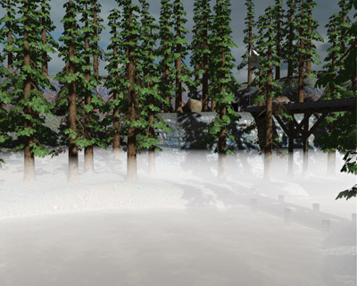
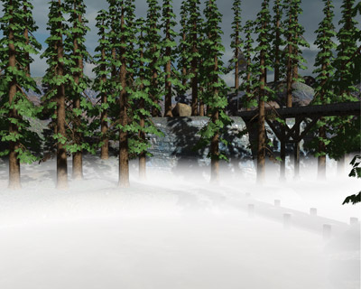

Fog Spaces
From C4 Engine Wiki
A fog space is a node that causes fog to be rendered in a scene. It's actually a half-space because all space is divided in half by a single boundary plane, and fog is rendered on one side of the plane.
Contents |
Creating a Fog Space

The boundary plane of a fog space does not have to be horizontal and can placed in any orientation. An example use of a vertical fog plane is one that coincides with a doorway leading into a fogged area from an unfogged area.
Density Functions


Using a Fog Space in Multiple Zones
A single fog space may be used to apply fog in multiple zones. A fog space automatically applies to the zone containing it. Each zone node has a built-in connector labeled FOG that can be connected to a fog space in another zone. Every zone connected to a particular fog space is affected by the fog as long as the camera can see the fog plane or is inside the fog itself. It is okay for a fog space to extend beyond the boundary of its containing zone.
Only one fog space should be visible at once for each render target (primary, reflection, and refraction targets—more below). If more than one fog space can be seen by the camera in a single render target, then any one of them could be chosen to be applied to the scene, and this could change with the camera position.
Optimizations
The engine automatically attempts to cull objects that it can determine to be fully fogged by a fog space. If you know that no objects will ever be fully fogged, then you can check the “Do not apply distance occlusion” box in the Get Info dialog to stop the engine from performing unnecessary visibility culling.
Fog can be disabled for specific render targets by checking the appropriate boxes in the Get Info dialog. This is a performance optimization for preventing fog from being applied where none of it can actually be seen. For instance, if a fog space were being used to model underwater murkiness, then it should be excluded from all but the refraction buffer since it can't be visible in the primary or reflection buffers.
Fog is rendered by applying it to each object that is drawn in the scene. By default, fog is calculated per pixel, but a geometry can be configured so that fog is calculated only at the vertices by checking the “Calculate fog at vertices” box in the geometry's Get Info dialog. This allows fog to be rendered much faster for the geometry, but in many cases it will produce objectionable results. Normally, this flag should only be set when an object has sufficient vertex density that fog values won't change much across triangles. However, per-vertex fog also works well on some geometries with low vertex densities when the camera is always outside the fog volume. The “Split polygons at fog plane” check box in the geometry's Get Info dialog causes new vertices to be inserted where the fog plane slices through the geometry to assist in generating desirable results with per-vertex fog.